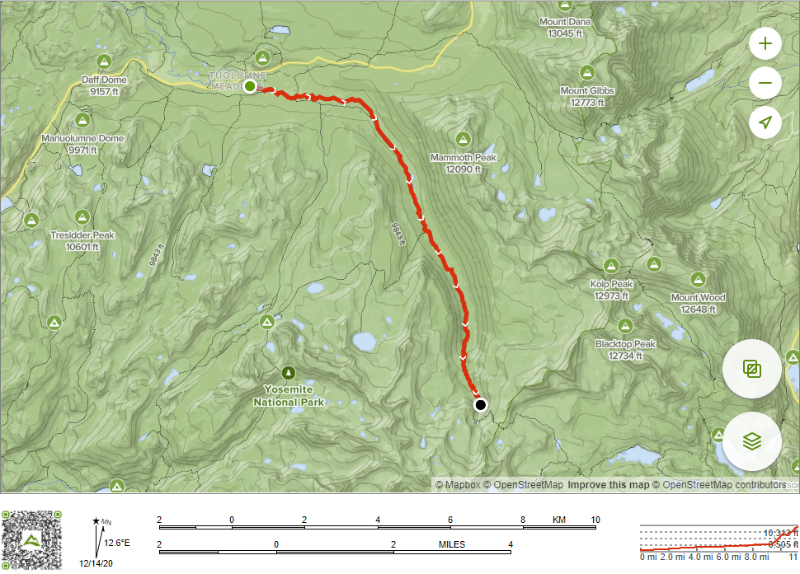

Day 4 - Tuolumne Meadows to Lake Before Lyell Glacier
11 mi, 1610' up, camp at 10,240'
|  |
Yeah! My air mattress patch held and no leaks. I actually had to let some air out of the mattress to soften it because it was too firm. The patch on the hydration bladder is holding too.

In the Tuolumne Campground with actual bear lockers and picnic tables (luxury items)
 |
Pete slept out under the stars again
 |
The previous day's laundry still drying
 |
We all slept in a little bit and didn't get on the trail until 8:30, but that's no problem as we don't have a particularly difficult day. We'll be heading up Lyell Canyon and following the Lyell Fork of the Tuolumne River up to its source at the Lyell Glacier. Mileage-wise, we could push all the way over Donahue Pass in late afternoon, but there really isn't a point because it's going to take us three days to get to Red's Meadow, even if we push over Donahue Pass today. So instead, we'll camp short of Donahue Pass today and take things a little easier. Lyell Canyon and the river flowing through it is absolutely gorgeous. It takes literally minutes and we feel like we're away from all the people at Tuolumne Meadows and there's something about the river and Lyell Canyon that seems so serene. The actual JMT takes a path up away from the river along the walls of the canyon, but there's another less-traveled path along the river so we decide to take that. It's probably from fisherman and other day hikers as it soon becomes clear, it isn't officially built or maintained. We continue following the river and alternately find and then lose a nice little trail. There's no way to get lost here and following along the river is just so nice that, even though we're not making great time towards our destination, we all seem happy to keep going this way as it really is beautiful. This part of Lyell Canyon is only very gently sloped uphill which makes the going pretty easy.


Following the Lyell Fork of the Tuolumne River
 |


The river is a mix of serene pools and rushing water. Incredibly clear water - probably freshly melted from the Lyell Glacier only a few days ago.
 |
What looks like the remnants of a snow avalanche
 |
After following the river bank for awhile, we’re back on the John Muir Trail as the terrain gets steeper
 |
After several times of losing any semblance of a trail and having to blaze our own way through some brush, we finally decide to head back to the actual JMT away from the river and then we're able to pick up our pace a bit.
We run into some researchers working for the park service (grad student age folks) and they explain that they're studying the meadows and trying to gauge the effect of pack animals (e.g. mules or horses) grazing on the meadows. I'm guessing that the pack animals are allowed to graze in some places and not in others and they're trying to measure differences between the two.
As the canyon slowly ascends, we cross various tributaries and a couple trail junctions that lead to the Vogelsang High Sierra camp area which gives us benchmarks for where we are. We're caught a little bit by surprise by how slow our mileage progress has been - apparently wandering along the river bank isn't all that efficient a way to get somewhere so we start hiking a bit more in earnest along the real trail. As we're hiking, there are numerous places where you see that avalanches (some snow and some rock) have cleared out large swaths down the side of the canyon and, in many cases dumped debris into the meadow in the center of the canyon. There's a particularly large avalanche on the other side of the canyon that I've been told marks the closest to Tuolumne that you can camp. That's of no concern to us though as we're headed up much further.
We start to run into our first significant mosquitoes. In places, the river would turn into marsh and there would be quite a few mosquitoes. We had to all stop and put on insect repellent for the first time today. They weren't thick, but they were annoying at times. The Permethrin treatment on my hat seems to help keep them away from my face and I'm wearing a long sleeve shirt, but that still leaves my legs and the back of my hands as potential targets and that's what I need to protect with repellent.
This whole day is following the Lyell Fork of the river so there's really no reason to worry much about water. When you run out, we just stop and fill up again. Eventually, we reach the end of the flat part of the canyon and we start to ascend up towards the glacier and climb more steeply. The now steeper slope and altitude really start to kick in and we need to take more breaks. At one point, I start to feel a bit weak and I realize that maybe I haven't eaten enough today. It takes a little while to find a convenient place to rest that gives us access to the river, but eventually we find one and we take a long lunch break. I really need food (hummus and crackers this day) and it's a bit of a lesson to me that I need to keep on top of regular eating. I'm finding that I really need to keep up the calories during the day or my body kind of crashes a bit. My left knee has really tightened up so I roll it out the lower muscles with the racquetball I brought for that purpose and that seems to help. My back is feeling pretty sore from the weight of the backpack so I take some Advil to help with that. I'm starting to notice that my back and core get really pretty tired/sore in the afternoon and they demand that I take a couple rests in the afternoon to give them a break. I'm hoping this gets better because this doesn't bode well for the rest of the trip, particularly when we have heavier packs and longer days.
The trail starts to steepen and you can see Mount Lyell in the background. Donahue Pass at 11,066’ (tomorrow’s adventure) is to the left of that highest peak so that’s where we’re headed.
 |
Another view of Mount Lyell (peak on the left) where we’re headed
 |
Looking backwards to where we came from and a classic glacial valley
 |
Last glimpse of the valley we hiked through
 |
After our lunch break, the trail gets pretty steep and we're getting to altitudes we haven't been at yet near 10,000'. We're hiking about 10 mins and then taking a short break to catch our breath. We cross over the creek on a bridge (one of the trail milestones that tell us where we are) and we see several other backpackers camped there (one of the campsites we knew about). We decide that we'll go a bit higher before camping and we press on. Finally the grade of the trail softens a bit and we come upon a beautiful glacial lake right below Lyell Glacier and it looks like a perfect place to camp. This will give us just another 1000' up to go in the morning to push over Donohue Pass at 11,056'.
It's late afternoon (4:15pm) and there won't be a lot more direct sunlight (because we're in a canyon) so first things first, let's go swimming in the lake and wash some clothes. Corey is pretty much always the first one in (he doesn't seem to mind the cold water as much as I do), but eventually we all go swimming (brrrr!) and lay some washed clothes out on the rocks to dry. Though it's certainly cold, it's amazing how good it feels to wash a day's worth of trail dust and sweat off and get clean. We're coming to understand that arriving at camp by 4pm just gives you enough time to wash and get some things dry before the warmth of the sun disappears.
We're studying the map for tomorrow and discussing that maybe we'll go for a 14 mile day to Shadow Lake in order to arrive earlier at Red's Meadow the following day (showers, restaurant, etc...). Dinner tastes great and I'm still so hungry afterwards that I dip into some of the leftover food from previous days. I wish I knew if I was losing weight because I wasn't eating enough or not. At 7:30, the sun starts to go behind the canyon walls and the temperature drops quickly. It may be cold tonight at this higher altitude.
I thought it would be hard to beat the view we had at our campsite before the Sunrise High Sierra Camp, but this view of Lyell Glacier has that one beat easily! Another gorgeous campsite.
Corey is the first one into the (very cold) water to wash off the day’s grime
 |
Our campsite
 |
The view from our campsite (Lyell Glacier in the background)
 |
A closer look at my tent set up for the night - can’t really get stakes into the compacted granite so we use rocks to hold the tent ropes
 |
The view from our front porch - pretty hard to beat
 |
The last vestiges of sunlight on Mount Lyell
 |